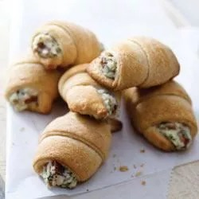

Start with a Yummy Appetizer

Description
Start your meal off right! Crescent roll dough is rolled with a PHILADELPHIA cream cheese and bacon mixture for a savory afternoon or dinnertime treat.
Ingredients:
- Cream Cheese
- Bacon
- Grated Parmesan
- Onions
- Fresh Parsley
- Milk
- 2 packages crescent dinner rolls
Steps:
- Preheat the oven to 375 degrees F.
- Mix cream cheese, bacon, Parmesan cheese, onion, parsley, and milk together in a bowl.
- Separate each can of dough into 8 triangles; cut each triangle lengthwise in half. Spread each dough triangle with 1 generous teaspoon cream cheese mixture; roll up, starting at short side of triangle. Place, point-side down, on baking sheet.
- Bake in the preheated oven for 12 to 15 minutes or until golden brown. Serve warm.